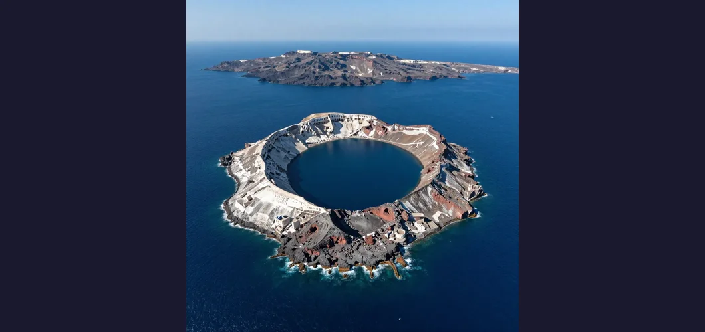

The Fall of the Minoans: How Earth's Biggest Eruption Toppled a Civilization

Picture the island of Crete in the second millennium BCE. That means a time between about 2000 and 1000 years before the year 1. Ships rock in a busy harbor. They are loaded with olive oil, wine, and saffron, a costly spice. Inside a great palace, painters are at work on a wall. They are drawing young acrobats who leap over a charging bull.
These people were the Minoans. Modern archaeologists gave them that name after the legendary King Minos of Crete. The Minoans are often called the first civilization in Europe. They built big, busy towns and palaces.
Their palaces had drains and water channels. The Minoans sailed the Mediterranean Sea as traders. They used writing too. Their island was a center of trade and culture. Their goods and ideas reached Egypt, Syria, and Anatolia, which is now Turkey. Some scholars think they may have reached as far west as the Iberian Peninsula, where Spain and Portugal are today.
Then, around 1450 BCE, great change came. Many palaces on Crete were destroyed. Trade fell. After this, the Greek-speaking Mycenaeans from mainland Greece became strong on Crete. The clay tablets at Knossos were now written in Linear B, an early form of Greek. The older Minoan script, Linear A, has never been read. The Minoan world faded, and left behind ruins, legends, and a mystery. Archaeologists have studied it for over a century.
The fall of the Minoans was probably not one event. Scholars still argue about the causes. Some think of volcanoes, some of earthquakes, some of war, and some of the climate.
Near the start of the story stands one of the largest volcanic eruptions in human history. This was the Minoan eruption of Thera, a volcano on the island now called Santorini. Scientists estimate that it threw out between 28 and 41 cubic kilometers of rock. It sent tsunamis, which are giant sea waves, across the Aegean Sea. Some researchers link it to odd weather as far away as China and Egypt. But that link is debated.
So was the eruption enough to destroy a civilization? Or was it only one blow? The Minoans seem to have recovered quickly. Earthquakes, invasion by the Mycenaeans, or trouble inside the Minoan government may have come later. Scholars do not agree.
The Minoan civilization grew out of the early farming cultures of Crete. It began around 3100 BCE. Towns and palaces grew around 2000 BCE. The island had fertile plains and a mild climate. It also lay in the middle of the eastern Mediterranean. That made it a natural crossroads for trade between Egypt, the Levant, Anatolia, and mainland Greece.
The period from about 1700 to 1450 BCE was a rich time for the Minoans. Archaeologists call it the Neopalatial period. Some scholars think the Minoans may have held a leading place in sea trade across much of the Mediterranean.
At the heart of Minoan life were the palaces. These were huge groups of buildings. Scholars now think they served as places for worship, work, and storing goods. The largest and most famous was Knossos. The British archaeologist Sir Arthur Evans began large digs there in 1900.
Knossos covered about 20,000 square meters and had several floors. Its plan was complex. In later Greek tradition, it was remembered as the Labyrinth, from the myth of the Minotaur, a monster that was part man and part bull. Other major palaces stood at Phaistos in southern Crete, Malia on the northern coast, and Zakros on the eastern tip.
The Minoans were skilled builders. The palace at Knossos had drains, water channels, and a water supply. Light wells and open courts let daylight and air into the inner rooms. Their wooden columns were often narrower at the base than at the top, which was a special Minoan style.
The Minoans also wrote. They used Cretan hieroglyphs and Linear A. Nobody has been able to read either one. Linear B was later used to write an early form of Greek. Scholars read Linear B in 1952.
Minoan art shows bull-leapers and saffron gatherers. It is lively and full of movement.
The best-known pictures are the bull-leaping paintings found at Knossos. Young athletes grab a charging bull and jump over its back. Was this a real sport, a religious ritual, or a story from myth? People still debate it. The bull probably had a religious meaning. Some people link the Minoan bull images to the Greek myth of Theseus and the Minotaur. That link is tempting, but it is only a guess.
Sometime around 1600 BCE, the volcano on Thera erupted. The exact date is still argued. Radiocarbon tests, which measure old carbon in wood and bone, point to about 1627 to 1600 BCE. Evidence from archaeology points to a later date, about 1550 to 1480 BCE. The gap between the two methods is still not solved.
The blast was hard to imagine. It was rated 7 on the Volcanic Explosivity Index, a scale that measures how big an eruption is. That makes it one of the largest eruptions in human history.
Scientists estimate that it threw out 28 to 41 cubic kilometers of dense rock equivalent. That means the amount of rock if all the air were squeezed out. The cloud of ash may have climbed 30 to 35 kilometers into the sky.
Pyroclastic flows rushed across Thera. These are glowing avalanches of hot gas, ash, and rock. They moved very fast. The town of Akrotiri on Thera was buried under volcanic ash. The island was wrecked.
But the harm did not end with the ash. The eruption also made tsunamis that spread out across the Aegean. Crete lies about 110 kilometers to the south. Studies suggest that the waves reached northern Crete. At the Minoan site of Palaikastro, they may have been about 9 meters high. Such waves could wreck seaside towns and ships.
Scientists have found traces of the waves at Palaikastro. There, a layer of sea-washed material lies mixed with volcanic ash from Santorini. This is physical evidence that a tsunami reached the coast of Crete.
Losing ships would have been a serious blow. The Minoan economy depended on trade by sea. Without ships and harbors, the goods that kept the civilization alive would slow down. But the Minoans seem to have recovered, and the years after the eruption were a high point of their culture.
The town of Akrotiri on Thera was buried and kept safe by the eruption. It is one of the most remarkable archaeological sites in the world. People often call it the “Minoan Pompeii.” It had fine wall paintings, including a famous picture of a saffron gatherer. The ash preserved buildings and wall paintings.
Strangely, nobody has found any human remains at Akrotiri. This suggests that the people left before the final, worst part of the eruption. Perhaps there were warning signs, such as earthquakes, that gave them time to flee.
Some people think the destruction of Thera lies behind Plato’s legend of Atlantis. In the legend, a great island civilization was destroyed by earthquakes and floods. The parallels with Thera are suggestive. The Greek archaeologist Spyridon Marinatos proposed the link. But today most scholars do not support it.
The most important fact is that Minoan civilization did not end with the eruption. Even if the eruption came around 1600 BCE, the great destruction on Crete came about 1450 BCE. By some dates that is a gap of about 150 years. By other dates it is shorter.
During that time the Minoans rebuilt damaged places. They kept trading. They kept their own culture. Major sites such as Knossos still thrived. So the eruption was not one hammer blow. At most it was one of several problems that may have weakened the civilization.
Some scholars point to earthquakes, which could have damaged palaces and other buildings. Others point to ash and salt water that spoiled farmland. One study suggests that the climate around Crete became drier after about 1450 BCE. Less food would have strained the economy and the palace system. But nobody can say for sure.
Then came the Mycenaeans. They were Greek-speaking people from mainland Greece. After about 1450 BCE, they dominated Crete in culture and perhaps in politics. Linear B tablets appear at Knossos. This shows that Greek-speaking officials were now running the palace.
The Minoans’ own writing, Linear A, has never been read. The Minoan language is unknown. The arrival of Linear B was more than a change in paperwork. It was a change in culture. The Minoan world was being taken into the Mycenaean world.
How this happened is still argued. Some researchers blame invaders, because many sites were burned around 1450 BCE. Others think the cause was trouble inside Crete. It may have been slow, with trade deals, alliances, and rulers who adopted the new ways. But the result was the same. After about 1450 BCE, Crete was no longer ruled by Minoans alone.
The fall of the Minoans may show how easily complex societies can break when one problem leads to another. The Minoans built an advanced civilization. They had palaces, writing, trade with other lands, and skilled craftspeople.
Some scholars think the palaces were central to the Minoan economy. If so, damage to the palaces would have hurt the whole system. The sea routes were also important to the Minoans. If ships and harbors were hurt, goods and wealth from abroad would have slowed. Some scholars add that rulers who cannot handle disasters lose the trust of their people.
These patterns are not special to the Bronze Age. They show up again and again when complex societies collapse. The Minoans built the first great civilization in Europe. In the end, it passed into other hands. And scholars still ask how much of the change was the volcano, and how much was something else.
References & Further Reading
Ashmolean Museum: Linear B — Tablets from Knossos, written in Greek, read by Michael Ventris in 1952
📚 Recommended Reading: Fire in the Sea: The Santorini Volcano by Walter L. Friedrich (on Amazon) — As an Amazon Associate, we earn from qualifying purchases.
Editorial note: The Minoans were a real civilization on Crete, and the Thera eruption was one of the biggest in human history. Scholars still argue about the date of the eruption and about what ended Minoan rule on Crete. See our Editorial Policy.